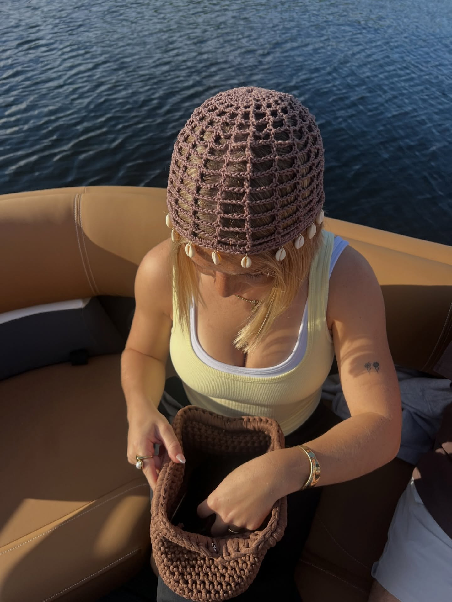
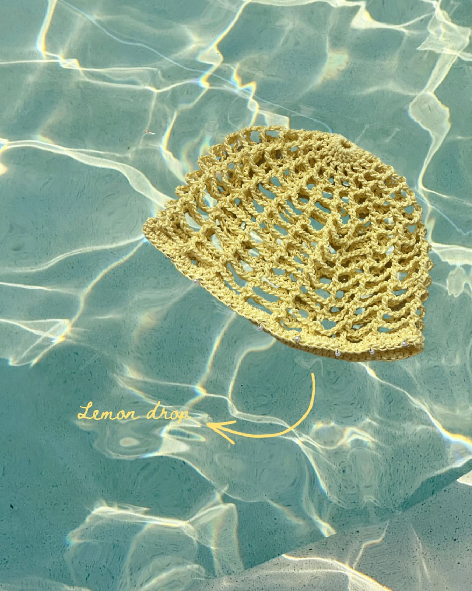
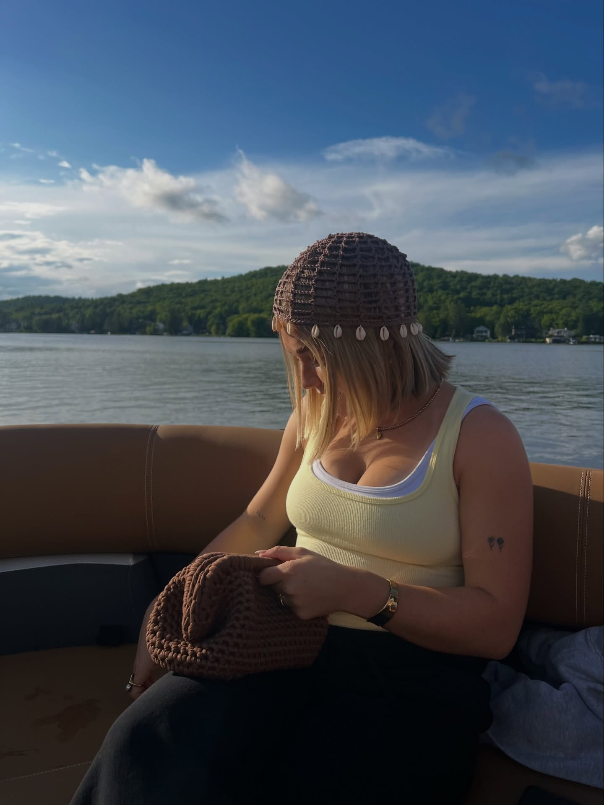
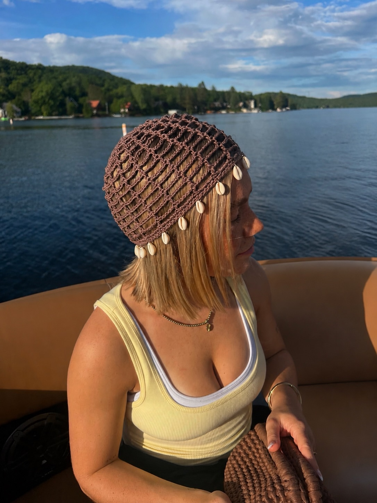

01
Mesh hats
Le classique de la maison. Bonnet en crochet à mailles ajourées, léger et estival — disponible avec ou sans charms.
avec ou sans charmsVêtements & accessoires en crochet · Québec
Chapeaux en crochet, mesh hats, chapeaux à coquillages, mini-robes et pièces en macramé — chaque morceau est monté à la main, maille par maille. Coloré, estival, unique. Fait pour la plage, le chalet et les journées ensoleillées.

Fait main · QuébecL'atelier
Oxi Threads, c'est du crochet pensé pour l'été — des pièces colorées et légères, montées une maille à la fois, sans machine et sans deux exemplaires identiques.
Des mesh hats aux chapeaux à coquillages, en passant par les mini-robes et les petits sacs en macramé, tout est imaginé et crocheté ici, au Québec. Les fils sont choisis pour tenir le soleil, l'eau et les journées de chalet — et chaque commande peut être ajustée à ta couleur, ta taille et ton style. Tu craques sur un modèle ? Un simple message privé et on part ta pièce.
La collection
Chaque modèle se décline en plusieurs couleurs et peut être personnalisé sur commande. Écris-moi en message privé pour choisir ta teinte, ta taille et tes petits détails.
Le classique de la maison. Bonnet en crochet à mailles ajourées, léger et estival — disponible avec ou sans charms.
avec ou sans charmsMesh hat bordé de vrais coquillages cowrie qui encadrent le visage. Parfait pour la plage et les fins de journée sur l'eau.
édition estivaleModèle sur mesure, tout en douceur et en mouvement. Crocheté sur commande selon ta couleur et ton tour de tête.
custom sur commandePetites robes et cover-ups tissés main, à porter par-dessus le maillot ou tels quels. Faits pour bouger.
tailles au choixPetits sacs et pochettes tressés à la main, compagnons parfaits d'une tenue estivale — coloris assortis à tes chapeaux.
accessoires assortisUne idée en tête ? On la crochète pour toi — couleur, format, charms et détails choisis ensemble en message privé.
sur demandeChaque pièce est faite main, en petit lot. Les couleurs, tailles et détails se choisissent au moment de la commande — écris-moi en DM et on part ta pièce ensemble.
Lookbook
Un aperçu des créations Oxi Threads en vrai. Photos issues du compte Instagram officiel @oxithreads.



Avis
Quelques mots reçus de clientes qui portent leurs pièces Oxi Threads tout l'été.
« Mon mesh hat ne me quitte plus de l'été. La qualité du crochet est folle et les compliments n'arrêtent pas sur la plage. »
« J'ai commandé un chapeau à coquillages dans ma couleur et il est encore plus beau en vrai. Fait main, unique, et livré super vite. »
« Service adorable en message privé, elle a pris le temps de m'aider à choisir. On sent l'amour derrière chaque pièce. »
Commander
Pas de panier ni de formulaire — tout se passe en message privé, comme une bonne vieille conversation. Choisis ton modèle, ta couleur, et on part ta création.
Repère la pièce qui te fait de l'œil dans le lookbook ou sur Instagram.
Envoie-moi un message privé avec ta couleur, ta taille et tes petits détails.
Je monte ta pièce à la main, rien que pour toi, et on convient de la remise.
Réponse rapide en journée — n'hésite pas à écrire, même juste pour poser une question.
Questions fréquentes
Les questions qu'on reçoit le plus souvent — réponses claires, sans détour.
Tout se fait en message privé sur Instagram @oxithreads (ou en DM sur TikTok). Dis-moi le modèle, la couleur et la taille — je te confirme le tout et on part ta pièce.
Oui ! La plupart des modèles se déclinent en plusieurs teintes, et plusieurs pièces se font entièrement sur mesure. On choisit ta couleur ensemble en message privé.
Comme tout est crocheté à la main, le délai varie selon le modèle et les commandes en cours. Je te donne toujours une estimation claire au moment de confirmer.
Absolument. Chapeaux à volants, formats et détails spéciaux, charms, couleurs précises : écris-moi ton idée en DM et on la crochète ensemble.
Oxi Threads est une petite marque locale du Québec. Les détails de remise ou de livraison se conviennent directement en message privé selon ta région.
Oui — chaque morceau est monté à la main, en petit lot. Même deux pièces du même modèle ont chacune leur petit caractère. C'est ça, le fait main.
On jase de ta pièce ?
La façon la plus simple de commander : un message privé sur Instagram ou TikTok. Je réponds vite et je t'aide à choisir.
Réponse rapide en journée. N'hésite pas à écrire, même juste pour une question.